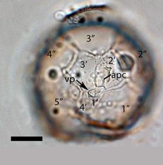
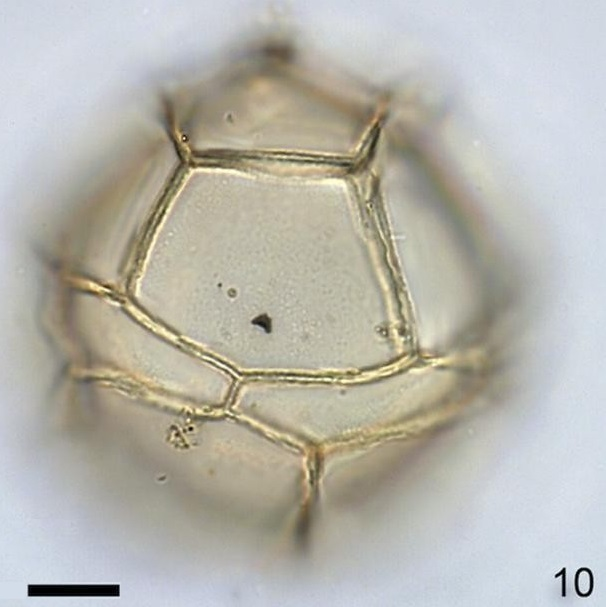

CYSTS LIST
LEJEUNECYSTA
Surface |
Shape |
Septa |
Species |
Central body (um.) |
Image |
Finely granulateTransparent |
OvoidalSmall apical boss |
Variable heightSmoothHigher at triple junctionsSpiky coalescense of the septa |
Impagidiniumaculeatum | 32 to 35 (D) |
|
Finely granulateTransparent |
Subspherical to ellipsoidal |
Variable heightSmoothLow height: 1.3 to 2.4 |
Impagidiniumcaspienense | 34 to 39.4 (D) |
 |
Finely granulateTransparent |
Spherical to ellipsoidal |
Finely granulate of uniform heightBases not cavate7 to 13.7 um. (height) |
Impagidiniumjaponicum | 38 to 55 (L)34 to 53 (W) |
|
Smooth to chagrinateTransparent. Pale |
SphericalThin wall (folded membranous) |
High sutural with fine radial striaeConstant height except in ventral area |
Impagidiniumpallidum | 49 to 63 (D) |
|
Finely granulateTransparent |
OvoidalCan be present apical protrusion |
Smooth and constant over the cyst surfaceParatabulation well expressed by sutural septa |
Impagidiniumparadoxum | 28 to 31 (D) |
|
SmoothTransparent |
Ovoidal |
Smooth, low, robustHeight less than 1/3 of inner bodyReduced tabulation in the ventral region |
Impagidiniumpatulum | 47 to 65 (D) |
 |
SmoothTransparent |
Ovoidal to elongate |
Smooth, regularly curvedHeight: 2 to 4 |
Impagidiniumplicatum | 24 to 34 (D) |
|
GranulateTransparent |
Spherical to ovoidalPronounced apical protuberance |
Separate irregularly, notably at triple junctionsIrregularly curved |
Impagidiniumsphaericum | 41 to 57 (D) |
|
MicrogranularTransparent |
OvoidalPronounced apical protuberance |
High sutural septa, have fine radial striaeIrregularly curvedHeight: 5 to 10 |
Impagidiniumstrialatum | 26 to 38 (D) |
|
ScabrateTransparent |
SubsphericalPronounced apical protuberance |
Variable height, septa irregularRaised bosses in gonal and intergonal positionHeight: 5 to 10 |
Impagidiniumvariaseptum | 47 to 75 (D) |
|
Smooth to chagrinateTransparent. Pale |
Ovoidal |
Membranous and highSmooth distal marginsHeight: 19 to 25 |
Impagidiniumvelorum | 47 to 53 (D) |